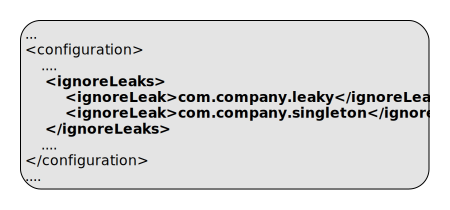
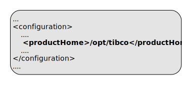
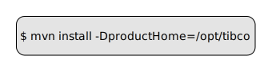

Cloud Software Group, Inc.
Cloud Software Group, Inc.ep:package-application
Full name:
com.tibco.ep:ep-maven-plugin:2.3.0:package-application
Description:
Build an application zip archive.
The packaging rules are as follows :-
- A mainifest file is created at /META-INF/MANIFEST.MF containing :-
- Archiver-Version: Plexus Archiver
- Built-By: build user
- Build-Jdk: jdk version
- Package-Title: project groupId and name
- Package-Version: project version and buildNumber
- Package-Vendor: project organization name (if set)
- TIBCO-EP-Application-Format-Version: 1
- TIBCO-EP-Build-Product-Version: product version
- Any additional headers or entries defined by an
<archive>configuration
- pom.xml copied to /META-INF/maven/groupId/artifactId/pom.xml
- pom.properties created in /META-INF/maven/groupId/artifactId/pom.properties
- Discovered application definition file is copied into /META-INF/application.conf
- The project's resourcedirectory/artifactId/ files are copied to /app-config/fragmentname/
- The project's resourcedirectory/groupId-artifact/ files are copied to /app-config/fragmentname/
- The project's resourcedirectory/groupId-artifact-version/ files are copied to /app-config/fragmentname/
- Remaining resource files are copied into /
- Dependent fragments are copied into /
The plexus archiver is used to create the archive via the maven assembly plugin.
The generated filename is <artifactId>-<version>-ep-application.zip
Attributes:
- Requires a Maven project to be executed.
- The goal is thread-safe and supports parallel builds.
- Binds by default to the lifecycle phase:
package.
Optional Parameters
| Name | Type | Since | Description |
|---|---|---|---|
<archive> |
MavenArchiveConfiguration |
2.3.0 |
The archive configuration to use. Any headers or entries here are in addition to the ones already placed by ep-maven-plugin. See Maven Archiver Reference. |
<ignoreLeaks> |
String[] |
1.3.0 |
List of class names to ignore in leak detection. This is processed to a CSV value to include in unit testing and in jar manifest file. Example use in pom.xml:  |
<productHome> |
File |
1.0.0 |
Product home location. This path is resolved in the following way :
Example use in pom.xml: Example use on commandline: User Property: com.tibco.ep.ep-maven.product |
Parameter Details
<archive>
- Type:
org.apache.maven.archiver.MavenArchiveConfiguration - Since:
2.3.0 - Required:
No
<ignoreLeaks>
List of class names to ignore in leak detection. This is processed to a CSV value to include in unit testing and in jar manifest file.
Example use in pom.xml:
- Type:
java.lang.String[] - Since:
1.3.0 - Required:
No
<productHome>
Product home location. This path is resolved in the following way :
- If property com.tibco.ep.ep-maven.product is set, use that, else
- If environment variable TIBCO_EP_HOME is set, use that, else
- Use localrepository/../product-group/product-artifact/product-version (so default is ~/.m2/product-group/product-artifact/product-version)
Example use in pom.xml:
Example use on commandline:
- Type:
java.io.File - Since:
1.0.0 - Required:
No - User Property:
com.tibco.ep.ep-maven.product